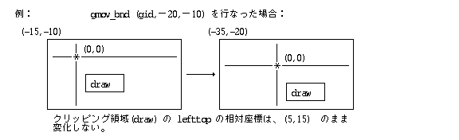
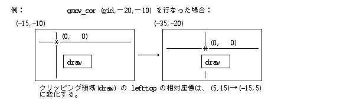

ディスプレイプリミティブの関数はすべて W 型の関数値をとり, 何らかのエ ラーがあった場合は, «負»のкод помилкиが戻る. Успішне виконання終了時には, «０»ま たは«正»の値が戻る.
ディスプレイプリミティブの関数から戻されるкод помилкиは以下のもの である.
なお, 以下のкод помилкиは, 各関数毎の説明では特に記述していないが各種の 描画関数で発生する可能性がある.
|
|
|
|
dev で指定したПристрій (Device)に対する«Пристрій (Device)描画環境»を新規に生成し, その 描画環境IDを関数値として戻す. 固有ビットマップを持たないПристрій (Device)の 場合は, EG_DEVのПомилкаとなる.
生成された描画環境の各データは, 以下のように初期化される.
対象Пристрій (Device) : dev
対象ビットマップ : dev の固有ビットマップ
マスクピクセル値 : 白(0)
フレーム長方形 : ビットマップの bounds 長方形
表示長方形 : ビットマップの bounds 長方形
前置長方形リスト : 未定義
クリッピング領域 : 未定義
線マスクパターン : 実線
文字カラー : 前景：黒(0x10000000), 背景：白(0x10FFFFFF)
文字描画方向 : TORIGHT (0)
文字描画位置 : (0,0)
文字間隔 : すべて0
文字フォント : システムフォント
文字セット : システムフォントの文字セット
色変換用カラー情報 : 未定義
|
dev で指定したПристрій (Device)に対する«Оперативна пам'ять (Memory)描画環境»を新規に生成し, その描 画環境IDを関数値として戻す. 描画用のビットマップは bmap で指定したも のが使用される. 指定したПристрій (Device)がカラーマップを持つ場合は, カラーマッ プを共有することになる.
bmap の内容は, 描画環境生成後にディスプレイプリミティブにより直接ア クセスされるため, 変更してはいけない.
bmap で指定したビットマップのプレーン数とピクセルビット数が, dev で指 定したПристрій (Device)で定義されるものと一致していない場合は, EG_DEV のПомилка となる.
dev ＝ NULL の場合は, «汎用Оперативна пам'ять (Memory)描画環境»の生成となる.
B *par == NULL の場合, カラー情報を持たない汎用Оперативна пам'ять (Memory)描画環境を生成す
る.
B *par != NULL の場合, CSPEC *par とみなされ, カラー情報付きの汎用メ
モリ描画環境を生成する.
CSPEC.colmap にカラーマップへのадреса пам'ятіを設定することにより, カラーマ
ップ方式の汎用Оперативна пам'ять (Memory)描画環境の生成も可能である.
生成された描画環境の対象Пристрій (Device), ビットマップ, カラー情報は生成する描 画環境の種類に応じてпараметриとして指定されたものになり, 他の各データ はПристрій (Device)描画環境の生成時と同様に初期化される.
|
|
|
|
|
|
|
gid で指定した描画環境に対して, 色変換用のCSPECを設定する. CSPEC がカラーマップ形式の場合, CSPEC.colmap にもエントリ数分の カラーマップが設定されていなければならない.
cspec = NULL とした場合, 変換用CSPECを未定義にすることを意味する. 色変換用カラー情報は, カラー情報を持たない描画環境には設定できない.
|
|
gid で指定した描画環境のカラーマップの p で指定したエントリから連続し た cnt 個のエントリを cv で指定した値に設定し, 実際に設定したエントリ の数を関数値として戻す. cv は, COLOR の cnt 個の COLOR 配列へのポイン タである.
カラーマップを持たないか, 設定可能でないカラーマップを持つ描画環境の場合は EG_ENV のПомилкаとなる.
|
カラーマップ形式でないカラー情報を持つ描画環境の場合, pをピクセル値とみなし, ピクセル値に対応する絶対ＲＧＢカラーを cv で指定した cnt 個の領域に取り出すことができる.
カラー情報を持たない描画環境の場合は EG_ENV のПомилкаとなる.
|
gid で指定した描画環境で cv で指定した絶対カラーにもっとも近いカラーの ピクセル値を取り出し, pixv で指定した領域に格納する. cv の上位４ビット の値は無視され, 下位 28 ビットがRGB絶対カラー指定値と見なされる.
カラー情報を持たない描画環境の場合は EG_ENV のПомилкаとなる.
関数値として, カラーの近似度の目安を示す 0 〜 100 の範囲の値を戻す. 0 の場合は完全に一致したカラーであり, 100 は補色となる. この値はあくま で目安であり, 厳密な意味はもたない.
|
|
|
gid で指定した描画環境の«クリッピング領域»を csize バイトの clip の 領域に設定する.
a_size が NULL でない場合, «クリッピング領域» を設定するために必要な Оперативна пам'ять (Memory)розмір у байтахが設定される.
«クリッピング領域»に必要なОперативна пам'ять (Memory)розмір у байтахを獲得するためには, clip = NULL, csize = 0 でこの関数を呼び出せばよい.
clip が NULL または«クリッピング領域»を設定するために必要なрозмір у байтахよ りも少ない場合, clip の領域にはなにも設定されない.
関数値として, 実際に設定したクリッピング領域のрозмір у байтахを戻す. ０の場合, なにも設定されなかったことを示す. a_size = 0, 関数値 = 0 の場合, クリ ッピング領域が未定義であることを示す.
|
gid で指定した描画環境の«クリッピング領域»を clip で指定した任意領域 に変更する.
clip は任意領域へのвказівник (Pointer)であり, NULL の場合は, «クリッピング領域» を未定義(なし)にする. 任意領域の内容はコピーされてディスプレイプリミティブ 内で使用される.
|
|
|
|
|
|
|
gid で指定した描画環境上での描画で使用する内部パターンイメージを格納す るために必要なОперативна пам'ять (Memory)領域全体のバイトрозмір у байтахを取り出し, size で指定した 領域に格納する.
kind は使用するパターンのタイプであり, 内部パターンであってはいけない. hsize, vsize は, 使用するパターンの横розмір у байтах, 縦розмір у байтахのピクセル数の指 定である.
このрозмір у байтахは, その描画環境用に生成される同一のパターンタイプ, 同一のパ ターンのрозмір у байтахを持つ全ての内部パターンイメージに対して同一の値である. 即ち, 得られたрозмір у байтах×Ｎ のОперативна пам'ять (Memory)領域内にＮ個の任意のパターンを生成で きることが保証される.
|
gid で指定した描画環境上で描画するための内部パターンイメージを生成する. def は生成する描画パターンの定義データへのвказівник (Pointer)であり, パターンタイ プは内部パターンであってはいけない.
loc は, 生成した内部パターンイメージを格納する領域へのвказівник (Pointer)であり, 少なくとも gsiz_pat() で得られた大きさがなくてはいけない.
loc = NULL の場合, パターンイメージ用の領域(ローカルОперативна пам'ять (Memory))が get_mbk() により自動的に確保される. 自動的に確保されたローカルОперативна пам'ять (Memory)は rel_mbk() によって解放できる.
*pat には, 生成された内部パターンイメージへのвказівник (Pointer)が戻され, そのバ イト数が *size に戻される. 得られたвказівник (Pointer)を PAT структура даних Cの ipat.ptr に 設定することにより, パターンとして使用できることになる. loc != NULL の場合には, *pat には loc の値が設定されることになる.
cvt には G_CVFORM および G_CVCOLOR の指定が可能で, この指定は変換前の パターンがMPATである場合のみ意味を持つ. 色変換用のCSPECが描画環境に 設定されていない場合には G_CVCOLOR 指定は無視される. MPATのビットマップの 有効ピクセルビット数が色変換用 CSPECの色指定と矛盾する （カラーマップのエントリ数が足りないなど）場合, EG_ENVを戻す.
生成したパターンは, 同一ビットマップ形式を持つ他の描画環境に対しても使 用することが可能であるが, 描画環境のCSPECが異なる場合, 描画色に関しては保証されない.
|
gid で指定した描画環境の«線マスクパターン»を mask で指定した内容に設 定する.
nbytes はマスクパターンのバイト数を示す１〜８の値であり, パターンの周 期を意味する. mask は nbytesで指定したバイト数のバイト配列へのвказівник (Pointer) である.
|
|
|
|
gid で指定した描画環境のビットマップの境界長方形(bounds)を (dh, dv) だ け並行移動する. dh は水平方向の移動量, dv は垂直方向の移動量を示す.
なお, クリッピング領域, 文字描画位置等の相対座標は変更されない.

|

|
|
|
gid で指定した«Пристрій (Device)描画環境»と, 同一のПристрій (Device)に対する他の«デバ イス描画環境»からの書込みアクセスをロック(lock≠ 0 の時), またはロック 解除(lock = 0の時)する.
Пристрій (Device)がロック対象外のПристрій (Device)の場合, またはОперативна пам'ять (Memory)描画環境の場合は, ロックは適用されず無視される.
ロックされた描画環境での描画(書込み)を行なった場合は, ロックが解除され るまで待たされる. 待たされている描画が複数存在した場合, 解除後の描画順 序は待たされた順番となる. 待つことによりデッドロックとなるような場合は, 待たずに EG_LOCK のПомилкаが各種の描画関数で戻されることになる. ただし, このデッドロックの検出はインプリメントに依存する.